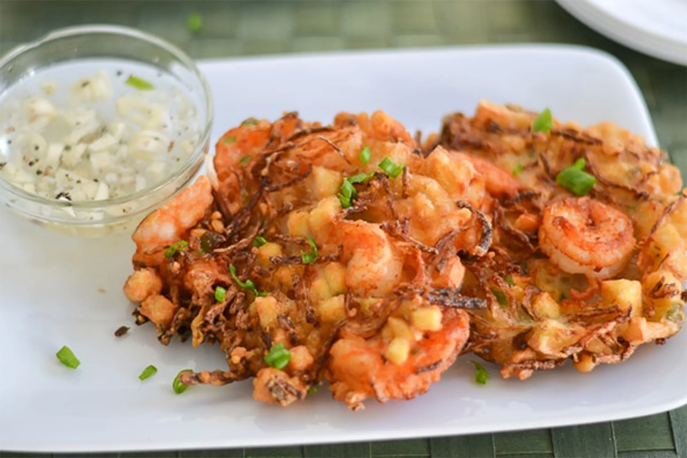

Ukoy (Filipino Shrimp Fritters)

Ingredients
- 1/2 cup small, unpeeled shrimps
- 1/2 cup cornstarch
- 1/2 cup flour
- 1 egg, beaten
- 3/4 cup water
- 1 cup grated unripe papaya or squash
- 1 medium onion, thinly sliced
- 2 cloves garlic, minced
- 1 teaspoon fish sauce
- 1/2 teaspoon ground black pepper
- 1 cup vegetable oil, for frying
- Vinegar dipping sauce, for serving
Instructions
- In a bowl, combine cornstarch, flour, egg, water, fish sauce, and black pepper. Stir until the mixture is smooth.
- Add the grated papaya, onions, garlic, and shrimps into the mixture. Stir to combine.
- Heat the oil in a frying pan over medium heat.
- Scoop about a tablespoon of the mixture and drop into the hot oil. Flatten with the back of the spoon.
- Fry each side for 2-3 minutes or until the fritter becomes crispy and golden brown.
- Drain the fritters on a paper towel-lined plate.
- Repeat with the remaining mixture.
- Serve the fritters with a vinegar dipping sauce.
Time
- Preparation Time: 20 minutes
- Cooking Time: 30 minutes
- Total Time: 50 minutes
Enjoy Cooking!